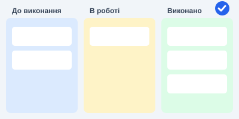

2.1. Що таке HTML?
Матеріал: https://w3schoolsua.github.io/html/html_intro.html
HTML (HyperText Markup Language) — стандартна мова розмітки веб-сторінок. Вона описує структуру документа за допомогою елементів (тегів), які браузер перетворює на видимий вміст: заголовки, абзаци, таблиці, зображення, форми.
- HTML описує структуру сторінки, а не її зовнішній вигляд (його задає CSS).
- Елементи HTML позначаються тегами, наприклад
<p>. - Браузер не показує самі теги, а використовує їх, щоб відобразити вміст.
<!DOCTYPE html>
<html lang="uk">
<head>
<meta charset="UTF-8">
<title>Назва сторінки</title>
</head>
<body>
<h1>Мій перший заголовок</h1>
<p>Мій перший абзац.</p>
</body>
</html>Мій перший заголовок
Мій перший абзац.
Показати код
<h1 style="text-align:left;font-size:24px;margin:0">Мій перший заголовок</h1>
<p>Мій перший абзац.</p>2.2. HTML Редактори коду та IDE
Матеріал: https://w3schoolsua.github.io/html/html_editors.html
Для написання HTML достатньо простого текстового редактора. Популярні редактори та середовища розробки:
- Visual Studio Code — безкоштовний редактор з розширенням Live Server;
- Notepad++ — легкий редактор для Windows;
- Sublime Text — швидкий редактор з підсвічуванням синтаксису;
- WebStorm — повноцінне IDE для веб-розробки.
Порядок роботи:
- Відкрити редактор і створити новий файл.
- Написати HTML-код.
- Зберегти файл з розширенням
.html(наприклад,index.html) у кодуванні UTF-8. - Відкрити файл у браузері (або запустити Live Server).
2.3. HTML Основні приклади
Матеріал: https://w3schoolsua.github.io/html/html_basic.html
Основні елементи сторінки: заголовки, абзаци, посилання, зображення.
Заголовок 1
Заголовок 3
Заголовок 4
Заголовок 5
Заголовок 6
Це абзац тексту.
Це посилання на підручник.

Показати код
<h1>Заголовок 1</h1>
<h2>Заголовок 2</h2>
<h3>Заголовок 3</h3>
<h4>Заголовок 4</h4>
<h5>Заголовок 5</h5>
<h6>Заголовок 6</h6>
<p>Це абзац тексту.</p>
<p>Це <a href="https://w3schoolsua.github.io/html/index.html" target="_blank">посилання</a> на підручник.</p>
<img src="images/task-board.svg" alt="Дошка завдань" width="300" height="150">2.4. HTML Елементи
Матеріал: https://w3schoolsua.github.io/html/html_elements.html
HTML-елемент складається з початкового тега, вмісту та кінцевого тега.
| Початковий тег | Вміст елемента | Кінцевий тег |
|---|---|---|
<h1> | Мій перший заголовок | </h1> |
<p> | Мій перший абзац | </p> |
<br> | — (порожній елемент) | — (кінцевого тега немає) |
Елементи можуть бути вкладеними: <html> містить <body>, а той — <h1> і <p>.
Завдання має високий пріоритет і близький дедлайн.
Другий рядок отримано порожнім елементом br.
Показати код
<p>Завдання має <strong>високий</strong> пріоритет і <em>близький</em> дедлайн.<br>
Другий рядок отримано порожнім елементом br.</p>2.5. HTML Атрибути
Матеріал: https://w3schoolsua.github.io/html/html_attributes.html
Атрибути надають елементам додаткову інформацію. Вони записуються в початковому тезі у вигляді ім’я="значення".
href— адреса посилання;src,alt,width,height— для зображень;style— вбудований стиль;lang— мова документа (<html lang="uk">);title— підказка при наведенні курсора.
Посилання з атрибутами href, target, title
Цей абзац червоний (атрибут style).
Наведи курсор на цей абзац (атрибут title).
Показати код
<p><a href="https://w3schoolsua.github.io/html/html_attributes.html" target="_blank" title="Відкрити підручник">Посилання з атрибутами href, target, title</a></p>
<img src="images/task-board.svg" alt="Дошка завдань" width="200" height="100">
<p style="color: #dc2626;">Цей абзац червоний (атрибут style).</p>
<p title="Я підказка">Наведи курсор на цей абзац (атрибут title).</p>2.6. HTML Параграфи
Матеріал: https://w3schoolsua.github.io/html/html_paragraphs.html
Абзац створюється елементом <p>. Браузер сам додає відступи до і після абзацу.
Перший абзац.
Другий абзац.
Рядок один,
рядок два,
рядок три (елемент br).
Елемент pre
зберігає пробіли
та переноси рядків.
Вирівнювання по центру.
Показати код
<p>Перший абзац.</p>
<p>Другий абзац.</p>
<hr>
<p>Рядок один,<br>рядок два,<br>рядок три (елемент br).</p>
<pre>Елемент pre
зберігає пробіли
та переноси рядків.</pre>
<p style="text-align: center;">Вирівнювання по центру.</p>2.7. HTML Посилання
Матеріал: https://w3schoolsua.github.io/html/html_links.html
Посилання створюється елементом <a> з атрибутом href.
Абсолютне посилання на інший сайт
Відносне посилання на розділ 2.9 цієї сторінки
Посилання, що відкривається в новій вкладці
Написати листа (mailto)
Показати код
<style>
a.btn { display: inline-block; padding: 6px 14px; background: #2563eb; color: #fff; text-decoration: none; border-radius: 6px; }
a.btn:hover { background: #1d4ed8; }
</style>
<p><a href="https://w3schoolsua.github.io/html/index.html">Абсолютне посилання</a> на інший сайт</p>
<p><a href="#s2-9">Відносне посилання</a> на розділ 2.9 цієї сторінки</p>
<p><a href="https://www.w3schools.com/" target="_blank" rel="noopener">Посилання, що відкривається в новій вкладці</a></p>
<p><a href="https://w3schoolsua.github.io/html/index.html"><img src="images/task-board.svg" alt="Дошка завдань" width="160" height="80"></a> — зображення як посилання</p>
<p><a href="mailto:student@example.com">Написати листа</a> (mailto)</p>
<p><a class="btn" href="#top">Кнопка-посилання «Нагору»</a></p>2.7.1. HTML Посилання — Різні кольори
Матеріал: https://w3schoolsua.github.io/html/html_links_colors.html
Колір посилання залежить від його стану: a:link — ще не відвідане, a:visited — відвідане, a:hover — під курсором, a:active — у момент натискання.
Показати код
<style>
.lc a:link { color: #2563eb; }
.lc a:visited { color: #7c3aed; }
.lc a:hover { color: #dc2626; text-decoration: none; }
.lc a:active { color: #f59e0b; }
</style>
<p class="lc">
<a href="https://w3schoolsua.github.io/html/html_links_colors.html" target="_blank">Посилання, що змінює колір</a> |
<a href="https://w3schoolsua.github.io/tags/index.html" target="_blank">Довідник тегів</a>
</p>2.7.2. HTML Посилання — Створення закладок
Матеріал: https://w3schoolsua.github.io/html/html_links_bookmarks.html
Закладка — це елемент з атрибутом id. Посилання на неї записується як href="#id". Можна посилатися й на закладку іншої сторінки: href="сторінка.html#id".
Перейти до розділу 3 | Посилання на закладку #s2-10 (повна адреса)
Розділ 1
Текст розділу 1.
Розділ 2
Текст розділу 2.
Розділ 3
Сюди веде закладка bm-c3. Повернутися до розділу 1
Показати код
<p><a href="#bm-c3">Перейти до розділу 3</a> |
<a href="index.html#s2-10">Посилання на закладку #s2-10 (повна адреса)</a></p>
<h3 id="bm-c1">Розділ 1</h3>
<p>Текст розділу 1.</p>
<h3 id="bm-c2">Розділ 2</h3>
<p>Текст розділу 2.</p>
<h3 id="bm-c3">Розділ 3</h3>
<p>Сюди веде закладка bm-c3. <a href="#bm-c1">Повернутися до розділу 1</a></p>2.8. HTML Зображення
Матеріал: https://w3schoolsua.github.io/html/html_images.html
Зображення вставляється елементом <img>. Обов’язкові атрибути: src (шлях до файлу) та alt (альтернативний текст). Розміри задають атрибутами width і height або властивістю style.
Те саме зображення, зменшене через style:
Зображення з неіснуючим файлом показує alt-текст:
Показати код
<img src="images/task-board.svg" alt="Дошка завдань TaskTracker" width="400" height="200">
<p>Те саме зображення, зменшене через style:</p>
<img src="images/task-board.svg" alt="Дошка завдань TaskTracker" style="width: 200px; height: 100px;">
<p>Зображення з неіснуючим файлом показує alt-текст:</p>
<img src="images/no-such-file.svg" alt="Тут мало бути зображення" width="200" height="40">2.8.1. HTML Карти зображень
Матеріал: https://w3schoolsua.github.io/html/html_images_imagemap.html
Карта зображення дозволяє зробити клікабельними окремі області картинки: елемент <map> з областями <area> різних форм (rect, circle, poly). Зображення пов’язується з картою атрибутом usemap. Клікни на колонку дошки — перейдеш до відповідного розділу.
Показати код
<img src="images/task-board.svg" alt="Дошка завдань" width="400" height="200" usemap="#taskmap">
<map name="taskmap">
<area shape="rect" coords="10,30,130,190" href="#s2-9" alt="До виконання → таблиці">
<area shape="rect" coords="140,30,260,190" href="#s2-10" alt="В роботі → списки">
<area shape="rect" coords="270,30,390,190" href="#s3-1" alt="Виконано → форми">
<area shape="circle" coords="372,14,12" href="#top" alt="Нагору">
</map>2.8.2. HTML Фонові зображення
Матеріал: https://w3schoolsua.github.io/html/html_images_background.html
Фонове зображення задається в CSS властивістю background-image для будь-якого елемента. За замовчуванням воно повторюється (repeat).
Текст на фоні, що складається з повторюваної картинки.
Показати код
<style>
.bg-box { background-image: url("images/pattern.svg"); background-repeat: repeat; padding: 30px; border: 1px solid #93b4ee; }
</style>
<div class="bg-box">
<p style="background:#fff;padding:8px;margin:0">Текст на фоні, що складається з повторюваної картинки.</p>
</div>2.8.3. HTML елемент <picture>
Матеріал: https://w3schoolsua.github.io/html/html_images_picture.html
Елемент <picture> дозволяє показати різні зображення залежно від ширини екрана. Браузер бере перший підходящий <source>, а якщо жоден не підійшов — звичайний <img>. Змінюй ширину вікна браузера, щоб побачити різницю (межа — 650 px).
Показати код
<picture>
<source media="(min-width: 650px)" srcset="images/wide.svg">
<img src="images/narrow.svg" alt="Банер TaskTracker" style="width: 100%; max-width: 800px;">
</picture>2.8.4. HTML Favicon / Фавікон
Матеріал: https://w3schoolsua.github.io/html/html_favicon.html
Фавікон — маленька іконка сайту у вкладці браузера. Її підключають в елементі <head> за допомогою <link>. У цьому документі вона вже підключена — подивись на вкладку.
<head>
<title>Самостійна робота №1</title>
<link rel="icon" type="image/svg+xml" href="images/favicon.svg">
</head>2.9. HTML Таблиці
Матеріал: https://w3schoolsua.github.io/html/html_tables.html
Таблиця створюється елементом <table>. Рядки — <tr>, комірки-заголовки — <th>, комірки з даними — <td>.
| Завдання | Виконавець | Статус |
|---|---|---|
| Розробити макет | Діана О. | Виконано |
| Налаштувати базу даних | Максим Д. | В роботі |
Показати код
<table>
<tr>
<th>Завдання</th>
<th>Виконавець</th>
<th>Статус</th>
</tr>
<tr>
<td>Розробити макет</td>
<td>Діана О.</td>
<td>Виконано</td>
</tr>
<tr>
<td>Налаштувати базу даних</td>
<td>Максим Д.</td>
<td>В роботі</td>
</tr>
</table>2.9.1. HTML Межі таблиці
Матеріал: https://w3schoolsua.github.io/html/html_table_borders.html
Межі задаються властивістю border для table, th і td. Властивість border-collapse: collapse об’єднує подвійні межі в одну, а border-radius заокруглює кути.
Окремі межі
| Завдання | Виконавець | Статус |
|---|---|---|
| Розробити макет | Діана О. | Виконано |
| Налаштувати БД | Максим Д. | В роботі |
Показати код
<table class="t-sep">
<tr><th>Завдання</th><th>Виконавець</th><th>Статус</th></tr>
<tr><td>Розробити макет</td><td>Діана О.</td><td>Виконано</td></tr>
<tr><td>Налаштувати БД</td><td>Максим Д.</td><td>В роботі</td></tr>
</table>Об’єднані межі (collapse)
| Завдання | Виконавець | Статус |
|---|---|---|
| Розробити макет | Діана О. | Виконано |
| Налаштувати БД | Максим Д. | В роботі |
Показати код
<table class="t-col">
<tr><th>Завдання</th><th>Виконавець</th><th>Статус</th></tr>
<tr><td>Розробити макет</td><td>Діана О.</td><td>Виконано</td></tr>
<tr><td>Налаштувати БД</td><td>Максим Д.</td><td>В роботі</td></tr>
</table>Заокруглена межа
| Завдання | Виконавець | Статус |
|---|---|---|
| Розробити макет | Діана О. | Виконано |
| Налаштувати БД | Максим Д. | В роботі |
Показати код
<table class="t-round">
<tr><th>Завдання</th><th>Виконавець</th><th>Статус</th></tr>
<tr><td>Розробити макет</td><td>Діана О.</td><td>Виконано</td></tr>
<tr><td>Налаштувати БД</td><td>Максим Д.</td><td>В роботі</td></tr>
</table><style>
table.t-sep { border: 1px solid #333; }
table.t-sep th, table.t-sep td { border: 1px solid #333; }
table.t-col { border-collapse: collapse; }
table.t-col th, table.t-col td { border: 1px solid #333; }
table.t-round { border: 2px solid #2563eb; border-radius: 8px; border-spacing: 0; }
table.t-round th, table.t-round td { border-bottom: 1px solid #93b4ee; padding: 6px 10px; }
</style>2.9.2. HTML Розмір таблиці
Матеріал: https://w3schoolsua.github.io/html/html_table_sizes.html
Розмір таблиці задають властивостями width і height. Ширину окремих стовпців — width у th/td.
Таблиця на всю ширину
| Завдання | Виконавець | Статус |
|---|---|---|
| Розробити макет | Діана О. | Виконано |
| Налаштувати БД | Максим Д. | В роботі |
Показати код
<style>
table.t-full { width: 100%; border-collapse: collapse; }
table.t-full th, table.t-full td { border: 1px solid #333; padding: 6px; }
table.t-fix th, table.t-fix td { border: 1px solid #333; padding: 6px; }
table.t-fix { border-collapse: collapse; }
</style>
<table class="t-full">
<tr><th>Завдання</th><th>Виконавець</th><th>Статус</th></tr>
<tr><td>Розробити макет</td><td>Діана О.</td><td>Виконано</td></tr>
<tr><td>Налаштувати БД</td><td>Максим Д.</td><td>В роботі</td></tr>
</table>Задані ширина й висота
| Завдання | Виконавець | Статус |
|---|---|---|
| Розробити макет | Діана О. | Виконано |
Показати код
<style>
table.t-full { width: 100%; border-collapse: collapse; }
table.t-full th, table.t-full td { border: 1px solid #333; padding: 6px; }
table.t-fix th, table.t-fix td { border: 1px solid #333; padding: 6px; }
table.t-fix { border-collapse: collapse; }
</style>
<table class="t-fix" style="width: 60%; height: 120px;">
<tr><th style="width: 50%;">Завдання</th><th>Виконавець</th><th>Статус</th></tr>
<tr><td>Розробити макет</td><td>Діана О.</td><td>Виконано</td></tr>
</table>2.9.3. HTML Заголовки таблиць
Матеріал: https://w3schoolsua.github.io/html/html_table_headers.html
Заголовки — це комірки <th>. За замовчуванням вони жирні й по центру. Заголовками можуть бути й комірки першого стовпця (вертикальні заголовки). Підпис до таблиці задає <caption>.
Горизонтальні заголовки з підписом
| Завдання | Виконавець | Статус |
|---|---|---|
| Розробити макет | Діана О. | Виконано |
Показати код
<style>
table.t-h { border-collapse: collapse; }
table.t-h th, table.t-h td { border: 1px solid #333; padding: 6px 10px; }
table.t-h th.left { text-align: left; }
table.t-h th.row { background: #e8f0fb; }
</style>
<table class="t-h">
<caption>Завдання проєкту</caption>
<tr><th>Завдання</th><th>Виконавець</th><th>Статус</th></tr>
<tr><td>Розробити макет</td><td>Діана О.</td><td>Виконано</td></tr>
</table>Вертикальні заголовки, вирівняні по лівому краю
| Завдання | Розробити макет |
|---|---|
| Виконавець | Діана О. |
| Статус | Виконано |
Показати код
<style>
table.t-h { border-collapse: collapse; }
table.t-h th, table.t-h td { border: 1px solid #333; padding: 6px 10px; }
table.t-h th.left { text-align: left; }
table.t-h th.row { background: #e8f0fb; }
</style>
<table class="t-h">
<tr><th class="row left">Завдання</th><td>Розробити макет</td></tr>
<tr><th class="row left">Виконавець</th><td>Діана О.</td></tr>
<tr><th class="row left">Статус</th><td>Виконано</td></tr>
</table>2.9.4. HTML Таблиці. Padding & Spacing
Матеріал: https://w3schoolsua.github.io/html/html_table_padding_spacing.html
padding — відступ між межею комірки та її вмістом. border-spacing — відстань між комірками (працює без border-collapse: collapse).
padding: 15px
| Завдання | Виконавець | Статус |
|---|---|---|
| Розробити макет | Діана О. | Виконано |
| Налаштувати БД | Максим Д. | В роботі |
Показати код
<style>
table.t-pad { border-collapse: collapse; }
table.t-pad th, table.t-pad td { border: 1px solid #333; padding: 15px; }
table.t-spc { border-spacing: 20px; }
table.t-spc th, table.t-spc td { border: 1px solid #333; padding: 6px; }
</style>
<table class="t-pad">
<tr><th>Завдання</th><th>Виконавець</th><th>Статус</th></tr>
<tr><td>Розробити макет</td><td>Діана О.</td><td>Виконано</td></tr>
<tr><td>Налаштувати БД</td><td>Максим Д.</td><td>В роботі</td></tr>
</table>border-spacing: 20px
| Завдання | Виконавець | Статус |
|---|---|---|
| Розробити макет | Діана О. | Виконано |
| Налаштувати БД | Максим Д. | В роботі |
Показати код
<style>
table.t-pad { border-collapse: collapse; }
table.t-pad th, table.t-pad td { border: 1px solid #333; padding: 15px; }
table.t-spc { border-spacing: 20px; }
table.t-spc th, table.t-spc td { border: 1px solid #333; padding: 6px; }
</style>
<table class="t-spc">
<tr><th>Завдання</th><th>Виконавець</th><th>Статус</th></tr>
<tr><td>Розробити макет</td><td>Діана О.</td><td>Виконано</td></tr>
<tr><td>Налаштувати БД</td><td>Максим Д.</td><td>В роботі</td></tr>
</table>2.9.5. HTML Таблиці. Colspan & Rowspan
Матеріал: https://w3schoolsua.github.io/html/html_table_colspan_rowspan.html
colspan об’єднує комірки по горизонталі, rowspan — по вертикалі.
| Розклад команди | ||
|---|---|---|
| Виконавець | Завдання | Статус |
| Діана О. | Макет | Виконано |
| Верстка | В роботі | |
| Максим Д. | База даних | На перевірці |
Показати код
<style>
table.t-span { border-collapse: collapse; }
table.t-span th, table.t-span td { border: 1px solid #333; padding: 6px 10px; text-align: center; }
</style>
<table class="t-span">
<tr><th colspan="3">Розклад команди</th></tr>
<tr><th>Виконавець</th><th>Завдання</th><th>Статус</th></tr>
<tr><td rowspan="2">Діана О.</td><td>Макет</td><td>Виконано</td></tr>
<tr><td>Верстка</td><td>В роботі</td></tr>
<tr><td>Максим Д.</td><td>База даних</td><td>На перевірці</td></tr>
</table>2.9.6. HTML Стилізація таблиць
Матеріал: https://w3schoolsua.github.io/html/html_table_styling.html
За допомогою CSS таблицю можна оформити: смугасті рядки (nth-child), підсвічування під курсором (:hover), кольорова шапка.
| Завдання | Виконавець | Пріоритет |
|---|---|---|
| Розробити макет | Діана О. | Високий |
| Зверстати сторінку | Діана О. | Середній |
| Налаштувати БД | Максим Д. | Високий |
| Документація API | Софія Т. | Низький |
Показати код
<style>
table.t-zebra { border-collapse: collapse; width: 100%; }
table.t-zebra th, table.t-zebra td { padding: 8px; text-align: left; border-bottom: 1px solid #ddd; }
table.t-zebra thead th { background: #2563eb; color: #fff; }
table.t-zebra tbody tr:nth-child(even) { background: #f2f6fc; }
table.t-zebra tbody tr:hover { background: #fff3bf; }
</style>
<table class="t-zebra">
<thead>
<tr><th>Завдання</th><th>Виконавець</th><th>Пріоритет</th></tr>
</thead>
<tbody>
<tr><td>Розробити макет</td><td>Діана О.</td><td>Високий</td></tr>
<tr><td>Зверстати сторінку</td><td>Діана О.</td><td>Середній</td></tr>
<tr><td>Налаштувати БД</td><td>Максим Д.</td><td>Високий</td></tr>
<tr><td>Документація API</td><td>Софія Т.</td><td>Низький</td></tr>
</tbody>
</table>2.9.7. HTML Група стовпців таблиці
Матеріал: https://w3schoolsua.github.io/html/html_table_colgroup.html
Елемент <colgroup> з дочірніми <col> дозволяє оформити цілі стовпці одразу.
| Завдання | Виконавець | Статус |
|---|---|---|
| Розробити макет | Діана О. | Виконано |
| Налаштувати БД | Максим Д. | В роботі |
Показати код
<style>
table.t-cg { border-collapse: collapse; }
table.t-cg th, table.t-cg td { border: 1px solid #333; padding: 6px 10px; }
</style>
<table class="t-cg">
<colgroup>
<col span="1" style="background-color: #dbeafe; width: 200px;">
<col span="2" style="background-color: #fef3c7;">
</colgroup>
<tr><th>Завдання</th><th>Виконавець</th><th>Статус</th></tr>
<tr><td>Розробити макет</td><td>Діана О.</td><td>Виконано</td></tr>
<tr><td>Налаштувати БД</td><td>Максим Д.</td><td>В роботі</td></tr>
</table>2.10. HTML Списки
Матеріал: https://w3schoolsua.github.io/html/html_lists.html
У HTML є три види списків: невпорядкований (<ul>), впорядкований (<ol>) та список визначень (<dl>).
- Маркований елемент
- Ще один елемент
- Нумерований елемент
- Ще один елемент
- Статус
- Поточний етап виконання завдання
Показати код
<ul>
<li>Маркований елемент</li>
<li>Ще один елемент</li>
</ul>
<ol>
<li>Нумерований елемент</li>
<li>Ще один елемент</li>
</ol>
<dl>
<dt>Статус</dt>
<dd>Поточний етап виконання завдання</dd>
</dl>2.10.1. HTML Невпорядковані списки
Матеріал: https://w3schoolsua.github.io/html/html_lists_unordered.html
Вигляд маркера змінює list-style-type: disc, circle, square, none. Списки можна вкладати один в одного.
- disc (круг)
- circle (коло)
- square (квадрат)
- none (без маркера)
Вкладений список
- Керування завданнями
- створення
- редагування
- Сповіщення
Показати код
<ul style="list-style-type: disc;"><li>disc (круг)</li></ul>
<ul style="list-style-type: circle;"><li>circle (коло)</li></ul>
<ul style="list-style-type: square;"><li>square (квадрат)</li></ul>
<ul style="list-style-type: none;"><li>none (без маркера)</li></ul>
<h4>Вкладений список</h4>
<ul>
<li>Керування завданнями
<ul>
<li>створення</li>
<li>редагування</li>
</ul>
</li>
<li>Сповіщення</li>
</ul>2.10.2. HTML Впорядковані списки
Матеріал: https://w3schoolsua.github.io/html/html_lists_ordered.html
Атрибут type задає вигляд нумерації (1, A, a, I, i), start — початкове число, reversed — зворотний порядок.
- type="1"
- цифри
- type="A"
- великі літери
- type="a"
- малі літери
- type="I"
- римські великі
- type="i"
- римські малі
- start="50"
- наступний елемент
- reversed
- зворотна нумерація
- третій елемент
Показати код
<ol type="1"><li>type="1"</li><li>цифри</li></ol>
<ol type="A"><li>type="A"</li><li>великі літери</li></ol>
<ol type="a"><li>type="a"</li><li>малі літери</li></ol>
<ol type="I"><li>type="I"</li><li>римські великі</li></ol>
<ol type="i"><li>type="i"</li><li>римські малі</li></ol>
<ol start="50"><li>start="50"</li><li>наступний елемент</li></ol>
<ol reversed><li>reversed</li><li>зворотна нумерація</li><li>третій елемент</li></ol>2.10.3. HTML Інші списки
Матеріал: https://w3schoolsua.github.io/html/html_lists_other.html
Список визначень <dl> складається з термінів <dt> та описів <dd>. Зі звичайного списку за допомогою CSS можна зробити горизонтальне меню.
- Завдання
- Одиниця роботи з виконавцем і дедлайном.
- Дедлайн
- Крайній термін виконання.
Показати код
<style>
ul.menu { list-style-type: none; margin: 0; padding: 0; background: #2563eb; overflow: hidden; }
ul.menu li { float: left; }
ul.menu li a { display: block; padding: 10px 16px; color: #fff; text-decoration: none; }
ul.menu li a:hover { background: #1d4ed8; }
</style>
<dl>
<dt>Завдання</dt>
<dd>Одиниця роботи з виконавцем і дедлайном.</dd>
<dt>Дедлайн</dt>
<dd>Крайній термін виконання.</dd>
</dl>
<ul class="menu">
<li><a href="#s2-9">Таблиці</a></li>
<li><a href="#s2-10">Списки</a></li>
<li><a href="#s3-1">Форми</a></li>
</ul>
<div class="clear"></div>3.1. HTML Форми
Матеріал: https://w3schoolsua.github.io/html/html_forms.html
Форма (<form>) збирає дані від користувача. Поля вводу найчастіше створюють елементом <input>, а підписи — елементом <label>.
Показати код
<form action="#" method="get">
<label for="fname">Ім’я:</label><br>
<input type="text" id="fname" name="fname" value="Діана"><br>
<label for="lname">Прізвище:</label><br>
<input type="text" id="lname" name="lname" value="Олєйнікова"><br><br>
<input type="submit" value="Надіслати">
</form>3.1.1. HTML Атрибути форми
Матеріал: https://w3schoolsua.github.io/html/html_forms_attributes.html
Основні атрибути елемента <form>:
action— адреса, куди надсилаються дані;method— спосіб надсилання:get(у адресному рядку) абоpost(у тілі запиту);target— де показати відповідь (_self,_blank);autocomplete— автозаповнення (on/off);novalidate— вимкнути перевірку даних браузером.
Показати код
<form action="#" method="post" target="_self" autocomplete="on">
<label for="u1">Назва завдання:</label>
<input type="text" id="u1" name="title">
<input type="submit" value="Створити">
</form>3.1.2. HTML Елементи форми
Матеріал: https://w3schoolsua.github.io/html/html_form_elements.html
Елементи форми: <input>, <label>, <select> (з <option> і <optgroup>), <textarea>, <button>, <fieldset> із <legend>, <datalist>, <output>.
Показати код
<form action="#">
<fieldset>
<legend>Нове завдання</legend>
<p><label for="e-title">Назва:</label>
<input type="text" id="e-title" name="title"></p>
<p><label for="e-user">Виконавець:</label>
<select id="e-user" name="user">
<optgroup label="Розробники">
<option value="diana">Діана О.</option>
<option value="maksym">Максим Д.</option>
</optgroup>
<optgroup label="Тестувальники">
<option value="sofia">Софія Т.</option>
</optgroup>
</select></p>
<p><label for="e-descr">Опис:</label><br>
<textarea id="e-descr" name="descr" rows="3" cols="40">Короткий опис завдання</textarea></p>
<p><label for="e-tag">Мітка:</label>
<input list="tags" id="e-tag" name="tag">
<datalist id="tags">
<option value="frontend"></option>
<option value="backend"></option>
<option value="docs"></option>
</datalist></p>
<p><button type="button">Кнопка button</button></p>
</fieldset>
</form>
<form action="#" oninput="sum.value = parseInt(a.value) + parseInt(b.value)">
<input type="number" id="a" value="2"> +
<input type="number" id="b" value="3"> =
<output name="sum" for="a b">5</output>
</form>3.1.3. HTML Типи вводу
Матеріал: https://w3schoolsua.github.io/html/html_form_input_types.html
Тип поля задається атрибутом type елемента <input>.
Показати код
<form action="#">
<p>text: <input type="text" name="t1" value="Текст"></p>
<p>password: <input type="password" name="t2" value="12345"></p>
<p>radio: <input type="radio" name="t3" value="a" checked> A <input type="radio" name="t3" value="b"> B</p>
<p>checkbox: <input type="checkbox" name="t4" checked> Так</p>
<p>color: <input type="color" name="t5" value="#2563eb"></p>
<p>date: <input type="date" name="t6"></p>
<p>datetime-local: <input type="datetime-local" name="t7"></p>
<p>email: <input type="email" name="t8" placeholder="name@example.com"></p>
<p>file: <input type="file" name="t9"></p>
<p>hidden: <input type="hidden" name="t10" value="секрет"> (приховане поле, його не видно)</p>
<p>month: <input type="month" name="t11"></p>
<p>number: <input type="number" name="t12" min="1" max="10" value="3"></p>
<p>range: <input type="range" name="t13" min="0" max="100" value="40"></p>
<p>search: <input type="search" name="t14"></p>
<p>tel: <input type="tel" name="t15" placeholder="+380..."></p>
<p>time: <input type="time" name="t16"></p>
<p>url: <input type="url" name="t17" placeholder="https://"></p>
<p>week: <input type="week" name="t18"></p>
<p><input type="submit" value="submit"> <input type="reset" value="reset"> <input type="button" value="button"></p>
</form>3.1.4. HTML Атрибути вводу
Матеріал: https://w3schoolsua.github.io/html/html_form_attributes.html
Атрибути <input>: value, readonly, disabled, size, maxlength, min/max, multiple, pattern, placeholder, required.
Показати код
<form action="#">
<p>value: <input type="text" name="a1" value="Початкове значення"></p>
<p>readonly: <input type="text" name="a2" value="Лише читання" readonly></p>
<p>disabled: <input type="text" name="a3" value="Вимкнено" disabled></p>
<p>size: <input type="text" name="a4" size="40" value="Довге поле (size=40)"></p>
<p>maxlength: <input type="text" name="a5" maxlength="5" placeholder="не більше 5 символів"></p>
<p>min / max: <input type="number" name="a6" min="1" max="5" value="2"></p>
<p>multiple: <input type="file" name="a7" multiple></p>
<p>pattern: <input type="text" name="a8" pattern="[A-Za-z]{3}" placeholder="3 латинські літери" title="Три латинські літери"></p>
<p>placeholder: <input type="text" name="a9" placeholder="Підказка"></p>
<p>required: <input type="text" name="a10" required placeholder="обов’язкове поле"></p>
<p><input type="submit" value="Перевірити"></p>
</form>3.1.5. HTML Атрибути Input форми
Матеріал: https://w3schoolsua.github.io/html/html_form_attributes_form.html
Атрибути, що належать формі, але задаються на полях і кнопках: form (прив’язка поля до форми за її id), formaction, formmethod, formtarget, formnovalidate. Атрибут novalidate ставиться на самій формі.
Поле поза формою, але прив’язане до неї атрибутом form:
Показати код
<form action="#" method="get" id="form-main">
<label for="f1">Назва:</label>
<input type="text" id="f1" name="title" required>
<input type="submit" value="Надіслати">
<input type="submit" value="Надіслати без перевірки" formnovalidate>
<input type="submit" value="Надіслати через POST" formmethod="post" formaction="#">
</form>
<p>Поле поза формою, але прив’язане до неї атрибутом form:
<input type="text" name="note" form="form-main" placeholder="додаткове поле"></p>4. HTML Основи — приклади
Матеріал: https://w3schoolsua.github.io/html/html_examples.html
HTML-документ
<!DOCTYPE html>
<html>
<body>
<h1>Мій перший заголовок</h1>
<p>Мій перший абзац.</p>
</body>
</html>HTML-заголовки
Заголовок 1
Заголовок 3
Показати код
<h1>Заголовок 1</h1>
<h2>Заголовок 2</h2>
<h3>Заголовок 3</h3>HTML-параграфи
Це перший абзац.
Це другий абзац.
Показати код
<p>Це перший абзац.</p>
<p>Це другий абзац.</p>HTML-посилання
Показати код
<a href="https://w3schoolsua.github.io/html/index.html" target="_blank">Це посилання</a>HTML-зображення
Показати код
<img src="images/task-board.svg" alt="Дошка завдань" width="300" height="150">HTML-кнопки
Показати код
<button type="button">Клік</button>
<button type="button" disabled>Вимкнена</button>HTML-списки
- Кава
- Чай
- Крок перший
- Крок другий
Показати код
<ul>
<li>Кава</li>
<li>Чай</li>
</ul>
<ol>
<li>Крок перший</li>
<li>Крок другий</li>
</ol>5. HTML5
Матеріал: https://w3schoolsua.github.io/html/html5_intro.html
HTML5 — поточна версія HTML (рекомендація W3C від 28 жовтня 2014 року; зараз її підтримує WHATWG як «живий стандарт»). Нове в HTML5:
- спрощені
<!DOCTYPE html>і<meta charset="UTF-8">; - семантичні елементи
<header>,<footer>,<section>,<article>; - нові типи полів форм:
number,date,time,rangeта інші; - графіка й медіа:
<svg>,<canvas>,<audio>,<video>; - нові API: Geolocation, Drag and Drop, Web Storage, Web Workers, Server-Sent Events.
Семантичні елементи
Показати код
<style>
.sem { border: 1px solid #333; }
.sem header, .sem footer { background: #2563eb; color: #fff; padding: 6px 10px; }
.sem section { padding: 8px 10px; background: #eff6ff; }
.sem article { padding: 8px 10px; background: #fff7d6; margin: 6px; }
</style>
<div class="sem">
<header>header — шапка</header>
<section>
section — розділ
<article>article — самостійний фрагмент (наприклад, картка завдання)</article>
</section>
<footer>footer — підвал</footer>
</div>Нові типи полів
number:
date:
time:
range:
Показати код
<p>number: <input type="number" min="1" max="10" value="5"></p>
<p>date: <input type="date"></p>
<p>time: <input type="time"></p>
<p>range: <input type="range" min="0" max="100" value="60"></p>SVG і Canvas
Показати код
<svg width="120" height="60" aria-label="Приклад SVG">
<rect x="5" y="5" width="110" height="50" rx="10" fill="#2563eb"/>
<circle cx="30" cy="30" r="14" fill="#fff"/>
</svg>
<canvas id="cv" width="120" height="60" style="border:1px solid #888"></canvas>
<script>
var ctx = document.getElementById("cv").getContext("2d");
ctx.fillStyle = "#16a34a";
ctx.fillRect(10, 10, 100, 40);
</script>Аудіо та відео
Елементи <audio> і <video> вставляють мультимедіа без сторонніх плагінів (потрібні власні файли):
<video width="320" height="240" controls>
<source src="movie.mp4" type="video/mp4">
Ваш браузер не підтримує відео.
</video>
<audio controls>
<source src="sound.mp3" type="audio/mpeg">
Ваш браузер не підтримує аудіо.
</audio>Елементи, видалені з HTML5
acronym, applet, basefont, big, center, dir, font, frame, frameset, noframes, strike, tt — їх замінюють CSS та інші елементи (abbr, object, ul, s, del).
6. HTML Довідник тегів
Матеріал: https://w3schoolsua.github.io/tags/index.html
Повний довідник: https://w3schoolsua.github.io/tags/index.html. Нижче — основні теги, що використані в цій роботі.
| Група | Теги | Призначення |
|---|---|---|
| Структура | html, head, title, meta, link, body | каркас документа, метадані, підключення іконки й стилів |
| Розділи | header, nav, main, section, article, footer | семантична розмітка сторінки |
| Заголовки й текст | h1–h6, p, br, hr, pre, strong, em | заголовки, абзаци, розриви, виділення |
| Посилання | a | гіперпосилання та закладки |
| Зображення | img, map, area, picture, source, svg, canvas | графіка, карти зображень, адаптивні картинки |
| Таблиці | table, caption, thead, tbody, tfoot, tr, th, td, colgroup, col | табличні дані |
| Списки | ul, ol, li, dl, dt, dd | маркований, нумерований списки та список визначень |
| Форми | form, fieldset, legend, label, input, select, option, optgroup, textarea, button, datalist, output | збір даних від користувача |
| Стиль і скрипти | style, script | вбудовані CSS та JavaScript |